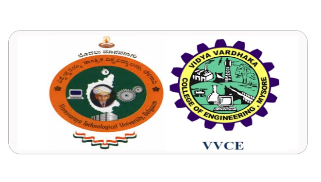
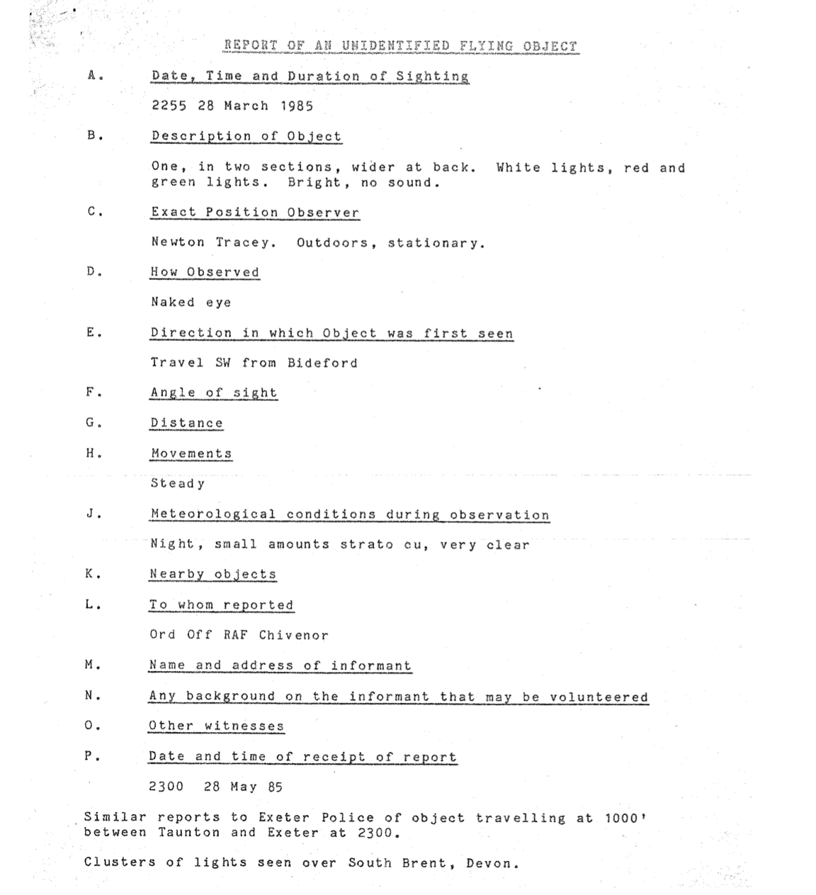
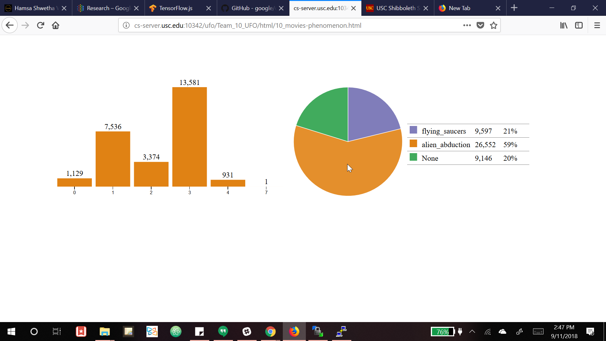

Hello, World. |
||
I'm Hamsa Shwetha! |
||
|
Graduate Research Student teaching machines to read and understand what they 'see'; We mostly converse in Python, SQL, Java, Tensorflow, and of course, the classic C. |
||
Great, Learn More! Download Résumé
ABOUT |
I'm currently in second year of my Masters in Computer Science at University of Southern California. As a directed research student, I'm working with an amazing team at NASA Jet Propulsion Laboratory under the guidance of Prof. Chris Mattmann, to perform Deep learning-based knowledge extraction from document images. | |
| An ex-Oraclite with a rich experience of 4 years, the heavily structured data ignited an interest in exploring real-world unstructured data and making some sense out it. Prof. Ellis Horowitz and Prof. Mattmann further fuelled it, and here I am today working on lots of Big Data from the real-world, and leveraging 'Deep' Learning to understand them! | ||
| Times when my brain needs a reboot, I'll probably be sipping Macchiatos at Cafe Dulce, churning out articles or poems, singing while I play my guitar ‘Pluto’, and daydream (also, plan) about climbing Mt. Whitney one day! |
PROFESSIONAL EXPERIENCE |
GRADUATE RESEARCH STUDENT |
|
|
APPLICATIONS DEVELOPER II |
||
|
RESEARCH INTERN Venkataram HS., et al (2012), “healthWISE”- Android app for personal Health and Nutrition Management in Proceedings of International Conference on Current Trends in Engineering and Management, July 2012, [pdf]. |
||
VOLUNTEER |
SOCIAL VOLUNTEER |
|
|
STUDENT MENTOR |
 | |
|
PLACEMENT CO-ORDINATOR |
||
|
STUDENT REPRESENTATIVE |
PROJECTS |


Data Science perspective on UFO Sightings - Are aliens out there? Devised a large-scale multimodal content analysis pipeline for preprocessing, Big Data extraction with OCR, storage, perform correlation analysis and create D3.js visualizations. Leveraged transfer learning to adapt Inception V3 model to classify and caption UFO Images. |
|
|
Android and Responsive Web Design Applications Deployed PHP on Google Cloud to request and parse JSON from Facebook Graph APIs. Rendered with Android material design, responsive web design patterns. |
Going round through the Search Engine Life Cycle Designed a pipeline to crawl multisource news data, store, build inverted index with mapreduce architecture on scalable cloud Hadoop clusters and deploy custom search engine ‘SEARCH’. |
|
INTERESTS |
music_noteMUSIC My tryst with music started at the age of 3, and it hasn’t stopped ever since. Training for 10+ years in Classical Carnatic music , Hindustani Music (Gwalior Tradition) , Light Music, and Guitar under the tutelage of wonderful musicians, has pushed my vocal limits to a great extent, giving my voice a unique texture, and a strong form of expression! |
notesCREATIVE WRITING As I grew, my thoughts evolved and the hobby of documenting the observations gradually turned into some serious writing. I love to have satirical takes on our mundane tasks, bring social awareness, and of course, rant! |
|
faceDANCE Dance, to me, is a performing art that gives space to experiment, courage to explore new horizons, and freedom to bring freshness into a character. Trained for 4+ years in Indian Classical Bharatanatyam, following Adyar Tradition, and few aspects of Kuchipudi, the confidence the art brings in and shapes an individual is immense. |
photo_cameraPHOTOGRAPHY My father, Venkataram and Jayanth Sharma taught me to view the world through camera's eyes, and today, I am an official camera hoarder of splendid cameras like Lubitel 2, Zenit ET, HotShot 110S, Sony Cybershot W90, Yashica FX-D Quartz, Miranda, each with an array of lenses and recently Nikon D3000 with Nikkor 35mm lens has been capturing my musings. |
WRITINGS |
Personal Blog- Movie Reviews, Poetry and Musings! My thoughts revolve around Cosmos and Cosmology in a venture to fathom the Universe, find my place in it, and figure out who I really am! |
The Hindu Open Page, 2014 A satirical take on the lives of Software Engineers, and the character is set against the backdrop of my hometown city of Bangalore, the Silicon Valley of India. This article was tweeted 15+ times! |
|
The Hindu Education Plus, 2009 Penned down during the campaigns of Indian Elections 2009, a TV show triggered a profound thought on how indifferent the generation was with the political affairs of the country. |
The Hindu Education Plus, 2009 A deep belief that life has much more to offer, and an individual grows when untapped potential is leveraged, led to this write-up! |